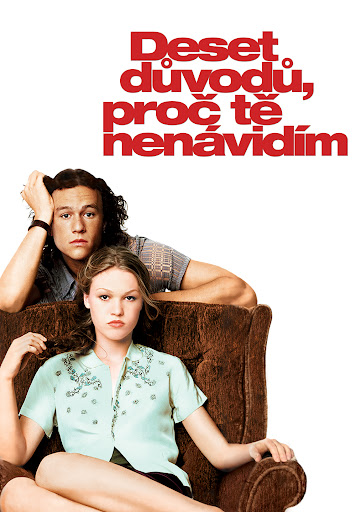

Deset důvodů, proč tě nenávidím
"You can't just buy me a guitar every time you screw up, you know?" Absolutní klasika. Kdo by nemiloval scénu na schodech? Je to vtipné, sarkastické a ta móda je prostě ikonická.
Tyhle filmy jsou jako objetí v podobě filmu. Připrav si popcorn a kapesníčky!

"You can't just buy me a guitar every time you screw up, you know?" Absolutní klasika. Kdo by nemiloval scénu na schodech? Je to vtipné, sarkastické a ta móda je prostě ikonická.

"Love is patient, love is kind, love means slowly losing your mind" Jane je věčná družička, která už přežila 27 svateb svých kamarádek. Ale kdy přijde řada na ní? Je to vtipné, trochu klišé, ale přesně to od dobrého romcomu chceme!

"There's no one like you, Covey." Co se stane, když se staré milostné dopisy dostanou k adresátům? Peter Kavinsky je prostě sen a celá estetika tohohle filmu je 10/10! fake dating!